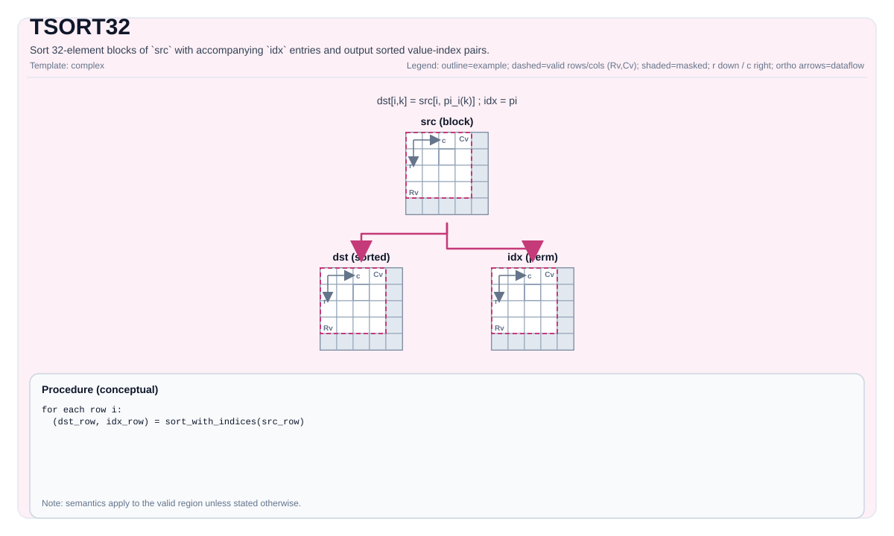

TSort32¶
指令示意图¶

简介¶
对 src 的每个32元素块，与 idx 中对应的索引一起进行排序，并将排序后的值-索引对写入 dst。底层SFU指令为 VBS32（vbitsort），单次调用可排序一个或多个独立的32元素列表。
硬件：VBS32（vbitsort）¶
VBS32运行在 SFU（非向量流水线）上。一次调用排序 repeat 个连续的32元素块，每个块由32个值 + 32个索引组成，打包为值-索引对：
void vbitsort(__ubuf__ T *dst, // 排序后的值-索引对输出
__ubuf__ T *src0, // 每块 32 个值 × repeat
__ubuf__ uint32_t *src1, // 每块 32 个索引 × repeat
uint8_t repeat); // 32 元素块的数量（1..255）repeat（上限REPEAT_MAX = 255）打包到config[63:56]。- 块在内存中连续分布，步长为32个元素：块
b读取src0[b*32 : b*32+32]和src1[b*32 : b*32+32]，写入dst[b*32*coef : ...]，其中coef= 2（float）或4（half）——值-索引对的扩展因子。 - 排序顺序：按值降序；相同值时索引小者优先。
数学语义¶
对每一行 r，src 按独立的32元素块处理。设块 b 覆盖列 32b … 32b+31，n_b = min(32, C - 32b) 为其有效元素数。
按值降序排序，输出重排后的序列：
其中 π 为该块的排序置换。
注：
idx是输入Tile（索引随值一起被重排），不是输出。dst存储排序后的值-索引对，而非仅排序后的值。
C++内建接口¶
声明于 include/pto/common/pto_instr.hpp：
公共包含头为
<pto/pto-inst.hpp>，内部声明位于pto/common/pto_instr.hpp。
// 3 参数：src 必须 32 对齐（validCol % 32 == 0）
template <typename DstTileData, typename SrcTileData, typename IdxTileData>
PTO_INST RecordEvent TSort32(DstTileData &dst, SrcTileData &src, IdxTileData &idx);
// 4 参数：支持非 32 对齐尾部（validCol % 32 != 0），通过 tmp 填充
template <typename DstTileData, typename SrcTileData, typename IdxTileData, typename TmpTileData>
PTO_INST RecordEvent TSort32(DstTileData &dst, SrcTileData &src, IdxTileData &idx, TmpTileData &tmp);Tile尺寸与数据类型¶
对于 src 形状为 \(R \times C\)（有效区域）、块大小32：
| Tile | dtype | 尺寸（元素数） | 说明 |
|---|---|---|---|
src |
half 或 float（\(T\)） |
\(R \times C\) | 待排序的值 |
idx |
uint32_t |
\(R \times C\)（或 \(1 \times C\) 广播） | 随值重排的索引 |
dst |
\(T\) | \(R \times (2C)\) float，\(R \times (4C)\) half | 排序后的值-索引对（见下方扩展因子） |
tmp（仅4参数） |
\(T\) | 见下方tmp尺寸公式 | 尾部填充scratch |
dst 扩展因子（typeCoef）：每个输入元素生成一个8Byte的tuple [value (4Byte), index (4Byte)]——float 的value占满4Byte；half 的2Byte value零扩展至4Byte。因此 dst 恒为 \(C \times 8\) 字节。
| dtype | 每个 src 列对应的 dst 列数（dtype单位） |
tuple布局 | 字节/tuple |
|---|---|---|---|
float |
×2（2个float槽位） | [value_f32, index_u32] |
8 |
half |
×4（4个half槽位） | [value_f16, 0x0000, index_u32] |
8 |
约束¶
| 约束 | 原因 |
|---|---|
dst/src dtype = half 或 float（须一致）；idx = uint32_t |
VBS32类型分派 |
所有Tile为 TileType::Vec、BLayout::RowMajor |
SFU寻址 |
validCol % 32 == 0（3参数） |
每块恰为32个元素 |
validCol 任意（4参数） |
尾块通过 tmp 填充至32，填充值为 \(-\infty\) |
repeat = validCol/32（3参数）或 ceil(validCol/32)（4参数） |
VBS32 repeat计数，每次调用 ≤ 255；更大的 validCol 拆分为多次 vbitsort 调用 |
tmp（4参数）≥ tmpSize 元素（见下方公式） |
保存填充后的行/尾块副本 |
无 WaitEvents&... / 无内部 event synchronization |
如需同步须显式调用 |
tmp 尺寸公式（4参数）¶
设 \(C\) = validCol，\(B\) = sizeof(T) 字节数，\(G\) = 32（块大小）。实现根据整行大小是否满足 MAX_UB_TMP = 8160 进行分支（Atlas A2/A3 训练系列产品/Atlas A2/A3 推理系列产品按元素数，Ascend 950PR/Ascend 950DT按字节数）：
ceil_G(C)= \(C\) 向上取整到32的倍数。- Atlas A2/A3 训练系列产品/Atlas A2/A3 推理系列产品：阈值单位为元素数（
srcShapeBytesPerRow / sizeof(T) <= MAX_UB_TMP），即 \(C \le 8160\)，与dtype无关（float → \(C \le 8160\)，half → \(C \le 8160\)）。 - Ascend 950PR/Ascend 950DT：阈值单位为字节（
srcShapeBytesPerRow <= MAX_UB_TMP），即 \(C \cdot b \le 8160\)（float → \(C \le 2040\)，half → \(C \le 4080\)）。该阈值为pto_copy_ubuf_to_ubuf（MOV_UB_TO_UB）的repeat上限 = 255块 × 32Byte。 - 尾块 = \(t = C \bmod G\) 个元素（末尾不完整块），扩展至 \(G\) 并以 \(-\infty\) 填充。
- Path A（\(C \cdot b \le 8160\)，小行）：从行首整行复制到tmp，然后原地填充最后32个元素。
- Path B（\(C \cdot b > 8160\)，大行）：仅复制尾块到tmp；完整块直接从
src排序。 - VBS32硬件上限：每次调用
repeat ≤ REPEAT_MAX = 255块（≤ 8160元素）；超过255块的行拆分为多次vbitsort调用。 - UB布局：
tmp应放置在dst之后（32Byte对齐），大小为ceil(C·b, 32)字节（等价于ceil(ceil(C, 32)·b, 32)，因 \(b \in \{2,4\}\) 整除32）——不应使用固定的8KB偏移，因为Path A（Atlas A2/A3 训练系列产品/Atlas A2/A3 推理系列产品）在接近阈值时对float需要最多 ~32KB（\(C \le 8160\) 元素 = float 32KB）。
4参数尾部处理¶
当 validCol % 32 != 0 时，末尾不完整块（\(t = C \bmod 32\) 个元素）须填充为完整的32元素块后才能送入 vbitsort。两条路径：
- Atlas A2/A3 训练系列产品/Atlas A2/A3 推理系列产品：\(C \le 8160\)（元素数） / Ascend 950PR/Ascend 950DT：\(C \cdot b \le 8160\)（字节）（小行）：整行复制到
tmp，然后通过vdup原地覆盖最后32个元素为 \(-\infty\) 填充；从tmp排序整行。 - Atlas A2/A3 训练系列产品/Atlas A2/A3 推理系列产品：\(C > 8160\)（元素数） / Ascend 950PR/Ascend 950DT：\(C \cdot b > 8160\)（字节）（大行）：仅复制尾块到
tmp并填充；完整块直接从src排序，仅尾块从tmp排序。
填充值（\(-\infty\) = -1.0/0.0 或 std::numeric_limits<T>::lowest()）落在降序排序的底部。若 validCol > 32 × 255，行按 REPEAT_MAX 大小的组拆分，每组通过独立的 vbitsort 调用排序。
汇编语法¶
AS Level 1（SSA）¶
%dst = pto.tsort32 %src, %idx : (!pto.tile<...>, !pto.tile<...>) -> !pto.tile<...>AS Level 2（DPS）¶
pto.tsort32 ins(%src, %idx : !pto.tile_buf<...>, !pto.tile_buf<...>) outs(%dst : !pto.tile_buf<...>)示例¶
#include <pto/pto-inst.hpp>
using namespace pto;
// 32 对齐：每行单个块
using SrcT = Tile<TileType::Vec, float, 1, 32>;
using IdxT = Tile<TileType::Vec, uint32_t, 1, 32>;
using DstT = Tile<TileType::Vec, float, 1, 64>; // 2× src 列数（float）
SrcT src; IdxT idx; DstT dst;
TSort32(dst, src, idx);
// 非 32 对齐尾部：4 参数 + tmp
using SrcT2 = Tile<TileType::Vec, half, 1, 100>;
using IdxT2 = Tile<TileType::Vec, uint32_t, 1, 100>;
using DstT2 = Tile<TileType::Vec, half, 1, 400>; // 4× src 列数（half）
using TmpT = Tile<TileType::Vec, half, 1, 128>; // ≥ ceil32(100)=128
TSort32(dst2, src2, idx2, tmp);ASM形式示例¶
Auto模式¶
%dst = pto.tsort32 %src, %idx : (!pto.tile<...>, !pto.tile<...>) -> !pto.tile<...>Manual模式¶
# pto.tassign %arg0, @tile(0x1000)
# pto.tassign %arg1, @tile(0x2000)
# pto.tassign %arg2, @tile(0x3000)
%dst = pto.tsort32 %src, %idx : (!pto.tile<...>, !pto.tile<...>) -> !pto.tile<...>PTO汇编形式¶
%dst = tsort32 %src, %idx : (!pto.tile<...>, !pto.tile<...>) -> !pto.tile<...>
# AS Level 2（DPS）
pto.tsort32 ins(%src, %idx : !pto.tile_buf<...>, !pto.tile_buf<...>) outs(%dst : !pto.tile_buf<...>)